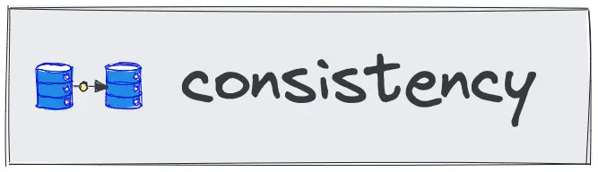
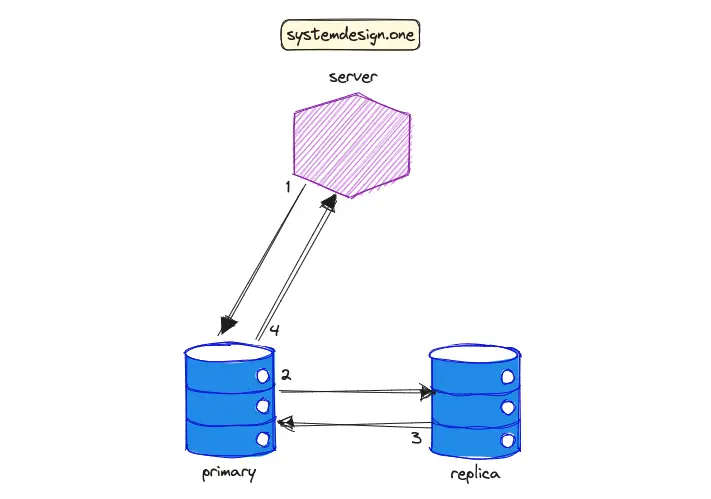
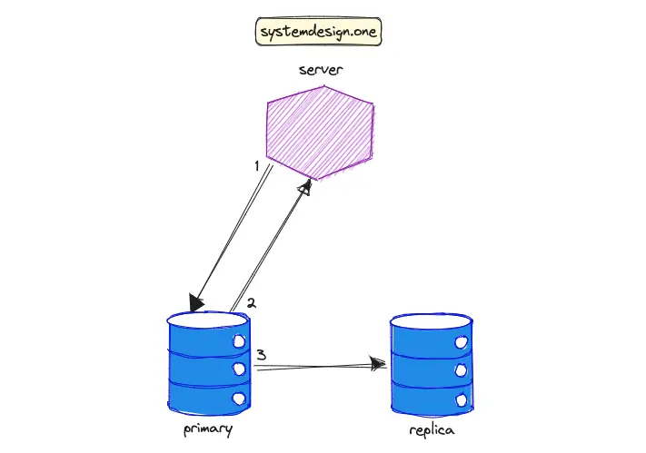
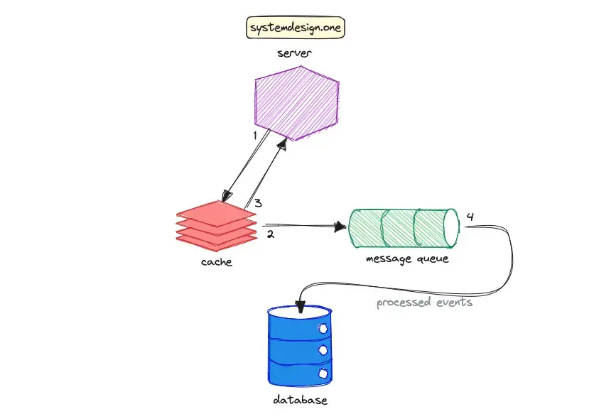

Consistency Patterns
Consistency Models in Distributed Systems

The target audience for this article falls into the following roles:
- Tech workers
- Students
- Engineering managers
The prerequisite to reading this article is fundamental knowledge of system design components. This article does not cover an in-depth guide on individual system design components.
Disclaimer: The system design questions are subjective. This article is written based on the research I have done on the topic and might differ from real-world implementations. Feel free to share your feedback and ask questions in the comments.
Download my system design playbook for free on newsletter signup:
Of three properties of distributed data systems - consistency, availability, and partition tolerance - choose two.
- Eric Brewer, CAP theorem
Consistency in Distributed Systems
A distributed system provides benefits such as scalability and fault tolerance. However, maintaining consistency across the distributed system is non-trivial. Consistency is vital to achieving reliability, deterministic system state, and improved user experience 1, 2.
A distributed system replicates the data across multiple servers to attain improved fault tolerance, scalability, and reliability 3. The consistency patterns (consistency models) are a set of techniques for data storage and data management in a distributed system 4. The consistency pattern determines the data propagation across the distributed system. Hence, the consistency pattern will impact the scalability, and reliability of the distributed system 2.
There are numerous consistency patterns in distributed systems. The choice of the consistency pattern depends on the system requirements and use cases because each consistency pattern has its benefits and drawbacks 4. Consistency patterns must be at the crux of multi-data center system architecture as it’s non-trivial to maintain consistency across multiple data centers. The consistency patterns can be broadly categorized as follows 5, 4, 6, 2:
- strong consistency
- eventual consistency
- weak consistency
The eventual consistency model is an optimal choice for distributed systems that favor high availability and performance over consistency. Strong consistency is an optimal consistency model when the same data view must be visible across the distributed system without delay. In summary, each consistency model fits a different use case and system requirements 1, 2, 4.
Strong Consistency
In the strong consistency pattern, read operations performed on any server must always retrieve the data that was included in the latest write operation. The strong consistency pattern typically replicates data synchronously across multiple servers 6, 3. Put another way, when a write operation is executed on a server, subsequent read operations on every other server must return the latest written data 2, 4, 1.
The benefits of strong consistency are the following 5:
- simplified application logic
- increased data durability
- guaranteed consistent data view across the system
The limitations of strong consistency are as follows 2, 4:
- reduced availability of the service
- degraded latency
- resource-intensive

The workflow to reach strong consistency in data replication is the following 5:
- the server (client) executes a write operation against the primary database instance
- the primary instance propagates the written data to the replica instance
- the replica instance sends an acknowledgment signal to the primary instance
- the primary instance sends an acknowledgment signal to the client
The popular use cases of the strong consistency model are the following 6, 3, 4:
- File systems
- Relational databases
- Financial services such as banking
- Semi-distributed consensus protocols such as two-phase commit (2PC)
- Fully distributed consensus protocols such as Paxos
For instance, any changes to the user’s bank account balance must be immediately replicated for improved durability and reliability. Google’s Bigtable and Google’s Spanner databases are real-world applications of strong consistency.
Eventual Consistency
In the eventual consistency pattern, when a write operation is executed against a server, the immediate subsequent read operations against other servers do not necessarily return the latest written data 1. The system will eventually converge to the same state and the latest data will be returned by other servers on succeeding read operations. The eventual consistency pattern typically replicates the data asynchronously across multiple servers 3, 6, 5, 4. In layman’s terms, any data changes are only eventually propagated across the system and stale data views are expected until data convergence occurs.
Eventual consistency can be implemented through multi-leader or leaderless replication topology. The system converges to the same state usually in a few seconds but the time frame depends on the implementation and system requirements. The benefits of eventual consistency pattern are as follows 5, 3, 2, 4, 7:
- simple
- highly available
- scalable
- low latency
The drawbacks of eventual consistency are the following 5, 4:
- weaker consistency model
- potential data loss
- potential data conflicts
- data inconsistency

The workflow to attain eventual consistency in data replication is the following 5:
- the client executes a write operation against the primary database instance
- the primary instance sends an acknowledgment signal to the client
- the primary instance eventually propagates the written data to the replica instance
The eventual consistency pattern is a tradeoff between data staleness and scalability. The typical use cases of eventual consistency are the following 6, 3, 5, 4, 7, 1:
- search engine indexing
- URL shortener
- domain name server (DNS)
- simple mail transfer protocol (SMTP)
- object storage such as Amazon S3
- comments or posts on social media platforms such as Facebook
- distributed communication protocol such as gossip protocol
- leader-follower and multi-leader replication
- distributed counter and live comment service
For example, any changes to the domain name records are replicated eventually by DNS. Distributed databases such as Amazon Dynamo and Apache Cassandra are real-world applications of the eventual consistency pattern. Eventual consistency is not a design flaw but a feature to satisfy certain use cases. The business owner should determine whether application data is a candidate for the eventual consistency pattern 7.
Weak Consistency
In the weak consistency pattern, when a write operation is executed against a server, the subsequent read operations against other servers may or may not return the latest written data. In other words, a best-effort approach to data propagation is performed - the data may not be immediately propagated 6, 3, 4. The distributed system must meet various conditions such as the passing of time before the latest written data can be returned 1.
The advantages of weak consistency are the following 4:
- high availability
- low latency
The disadvantages of weak consistency are as follows 6, 4:
- potential data loss
- data inconsistency
- data conflicts

The write-behind (write-back) cache pattern is an example of weak consistency. The data will be lost if the cache crashes before propagating the data to the database. The workflow of the write-behind cache pattern is the following:
- the client executes a write operation against the cache server
- the cache writes the received data to the message queue
- the cache sends an acknowledgment signal to the client
- the event processor asynchronously writes the data to the database
The common use cases of weak consistency are the following 6, 3, 4:
- Real-time multiplayer video games
- Voice over Internet Protocol (VoIP)
- Live streams
- Cache server
- Data backups
For instance, the lost video frames due to poor network connectivity are not retransmitted in a live stream.
Tradeoffs of Consistency Patterns
The tradeoffs associated with each consistency pattern can be outlined as the following 6:
| Backups | Leader-Follower | Multi-Leader | 2PC | Paxos | |
|---|---|---|---|---|---|
| Consistency | Weak | Eventual | Eventual | Strong | Strong |
| Transactions | No | Full | Local | Full | Full |
| Latency | Low | Low | Low | High | High |
| Throughput | High | High | High | Low | Medium |
| Data Loss | Lots | Some | Some | None | None |
| Failover | Down | Read only | Read/Write | Read/Write | Read/Write |
Further system design learning resources
Download my system design playbook for free on newsletter signup:
Further Consistency Models in Distributed Systems
Distributed quorum can be used to implement various consistency patterns. The configuration of quorum parameters decides the consistency pattern that will be achieved 1.
Linearizability
In the linearizability pattern, the data written to a server must be immediately visible (between the start and end of the write operation) to subsequent read operations against other servers. Linearizability is a variant of strong consistency and is also known as atomic consistency. The following techniques can be used to implement linearizability 5:
- single leader to handle both read and write operations
- distributed consensus algorithm such as Paxos
- distributed quorum
The advantages of linearizability are as follows 8:
- makes a distributed system behave as if the system were non-distributed
- simple for application to use
The disadvantages of linearizability are the following 8:
- degraded performance
- limited scalability
- reduced availability
One of the popular use cases of the linearizability pattern is the implementation of the user ID field’s uniqueness constraint in a distributed system 5.
Causal Consistency
In the causal consistency pattern, the related events (cause-effect) are observed in the exact order by other servers, while unrelated events might be observed without a specific ordering by other servers. Causal consistency is a variant of eventual consistency and emerges as a middle ground between eventual consistency and strong consistency 2, 1. The write operations that are causally unrelated or occur in parallel in real-time are known as concurrent events. The causal consistency pattern does not guarantee ordering for concurrent events 5.
The cause-effect relationships in the causal consistency pattern can be implemented via vector clocks. The benefits of causal consistency are as follows 5, 2:
- low latency
- reduced cost of synchronization
- high availability
- relatively stronger consistency
The widespread use cases of the causal consistency pattern are the following 2:
- Apache Cassandra provides lightweight transactions with causal consistency
- Data propagation in Bayou distributed database
- A comment thread on social media platforms such as Reddit
For example, replies to the same comment thread on Reddit must be causally ordered. However, unrelated comment threads can be shown in any order 2, 5. The causal consistency pattern is also used in real-time chat services such as Slack.
Summary
Numerous consistency patterns can be employed in different parts of the same distributed system 1. There is no silver bullet but only tradeoffs when it comes to choosing a suitable consistency pattern 6. The optimal choice of consistency pattern depends on the specific use case and requirements 4.
What to learn next?
Download my system design playbook for free on newsletter signup:
License
CC BY-NC-ND 4.0: This license allows reusers to copy and distribute the content in this article in any medium or format in unadapted form only, for noncommercial purposes, and only so long as attribution is given to the creator. The original article must be backlinked.
References
-
Dr. Werner Vogels, Eventually Consistent (2007), allthingsdistributed.com ↩︎
-
Arslan Ahmad, Consistency Patterns in Distributed Systems: A Complete Guide (2023), designgurus.io ↩︎
-
Donne Martin, System Design Primer, GitHub.com ↩︎
-
Consistency Patterns in Distributed Systems (2023), cs.fyi ↩︎
-
HoHuan Chang, Consistency Models in Distributed System (2020), linkedin.com ↩︎
-
Ryan Barrett, Transactions Across Datacenters (2009), Google for Developers ↩︎
-
Bill Wilder, Cloud Architecture Patterns: Using Microsoft Azure (2012), amazon.com ↩︎
-
Martin Kleppmann, Designing Data-Intensive Applications (2017), dataintensive.net ↩︎